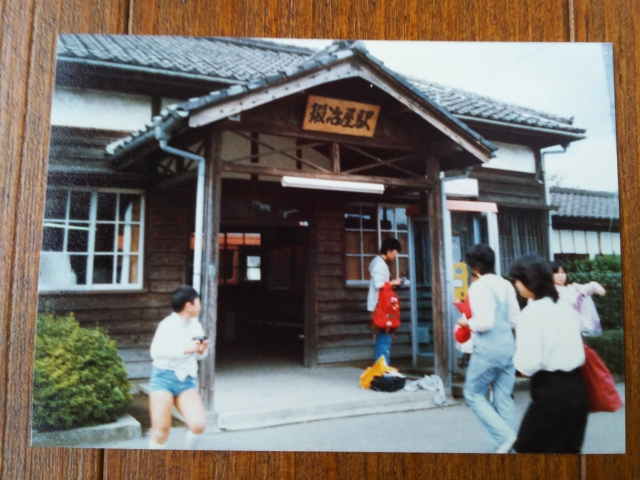

兵庫県内にも対象の線が４線もあって驚きました。それも全て加古川線ぞいやったので、友人と、なぜかお守り役で父親も一
緒に乗りに行きました。
昭和５６年１０月１０日
福知山線で谷川まで行って、そこから南下していき
ました。
野村駅というのは、今の西脇市駅です。当時は鍛冶
屋線に西脇駅がありました。なので今の西脇市駅は
全然、西脇の街中からは離れてます。
多分、鍛冶屋線の西脇駅と思われます。もしかした
ら終点の鍛冶屋駅か、あるいは谷川駅か？
約２５年後、仕事で頻繁に訪れることになるとは・
・・

鍛冶屋駅。
廃止対象の鍛冶屋線の終点です。
次に向かうのは北条線。
４線のうち、唯一現存しています。
粟生駅の跨線橋に書かれてた駅名票。まだ残ってる
かな？
北条線の終点の北条町駅の看板です。駅も建て替わ
ってしまって、この看板は残ってませんね。
３線名は三木線。三木鉄道としてけっこう頑張って
ましたが、２００８年に廃止されてしまいました。
三木駅か厄神駅と思います。
最後の４線目は高砂線。なんですが、もう夜になっ
てて写真は撮ってなかったみたいです。
しかし、このサボの色、強烈やな・・・
そして全く記憶から欠落してますが、廃止前（昭和５９年１１月２２日）に高砂線は再訪してました。
サクラカラーの１００年プリント。ありましたねぇ。
結構インパクトのあるネーミングで、「ほんまかい
な」とみんな思ったものですが、証明するにはあと
６０年は待たないといけません。
現時点では、同時期のフジカラーと変わらん、とい
うか、何かクセのある色目です。
さて、この写真を発見するまで、「なんで昼間の高砂線を再訪せんかった
んやろ」とずっと思ってましたが、ちゃんと廃止の時に行ってるがな！
写真は残ってるのに記憶は一片のかけらもない、というのは、結構怖い状
況っすね。
メモが残ってなくて、ここがどこの駅か不明ですが、多分高砂駅と思いま
す。
走行中の車内から撮った、たぶん尾上駅ですね。
高砂線ってキハ３５のイメージしかなかったんです
が、キハ２３も動いてたんすね。
見た目は好きな車両でした。
高砂駅と思います
この写真が、どこで撮ったか謎なんすよ。加古川駅
のそばに気動車用の車庫があってそこで撮った気も
するんやけど・・・
これはキハ３７で国鉄末期に登場した当時の最新形
式ですね。今、調べてみたら、全国で５両しか作ら
れてなかったって！それが廃止される路線に充当さ
れてたんですね。
しかしどこから撮ったんやっちゅー写真やね。望遠レンズ持ってたから、
敷地外からの撮影と思うのですが・・・
これは加古川駅近くでの撮影と思います。
キハ３５は嫌いやったなぁ。
逆光気味ですが、キハ２０ですね。
加古川駅です。高砂線も駅の北側の加古川線のホー
ムを使ってて、発車後しばらく走ってから山陽本線
をオーバークロスしてたようです。
これがどこかわからんのよね。高砂北口？
廃止を控えた飾り付けが、なんか悲しい・・・